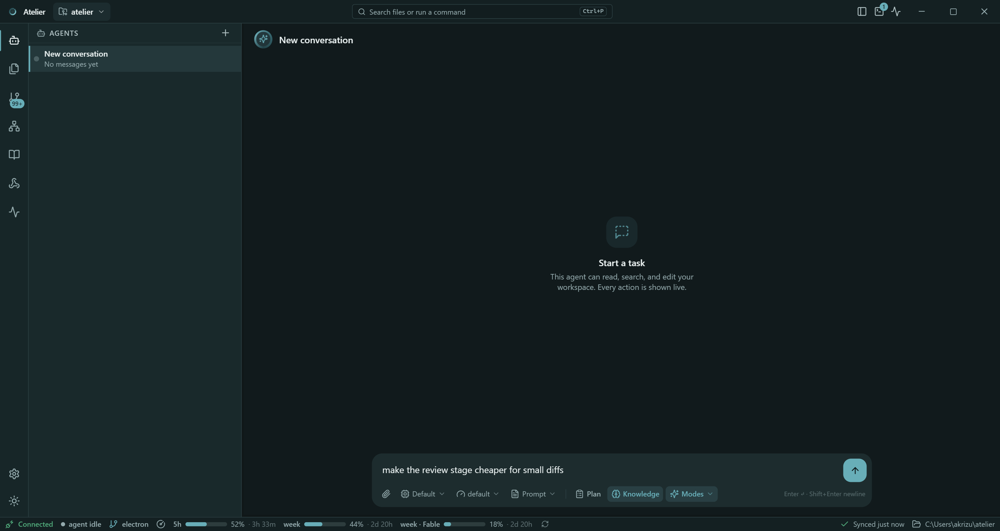
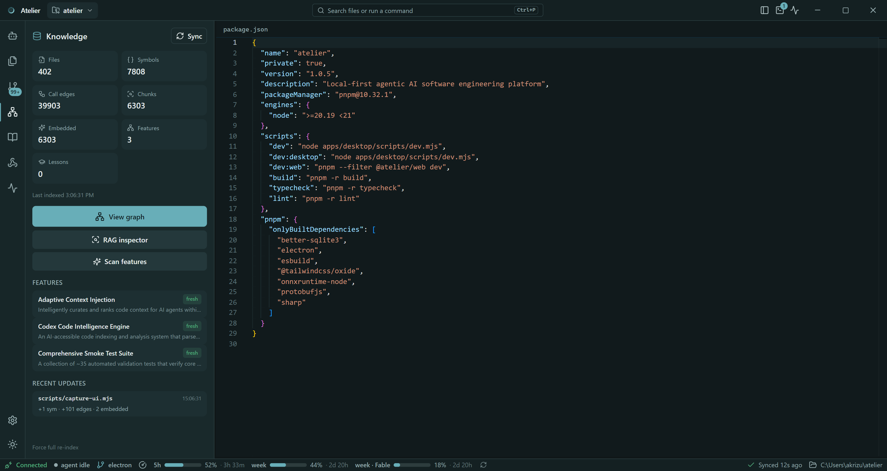
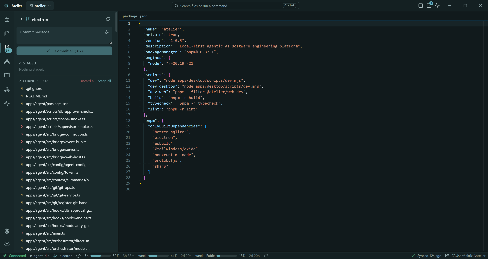
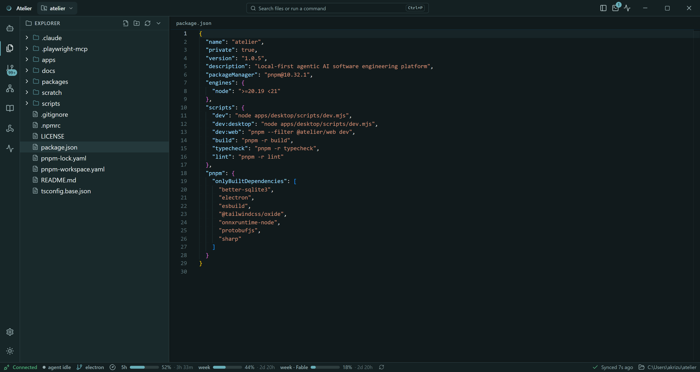
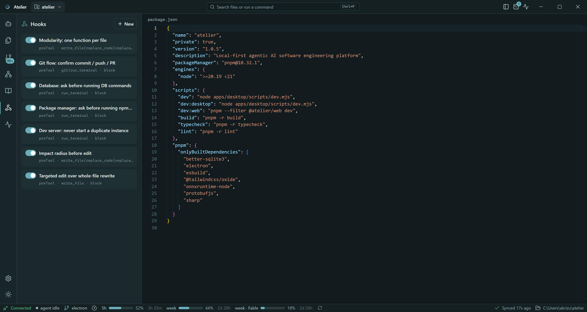
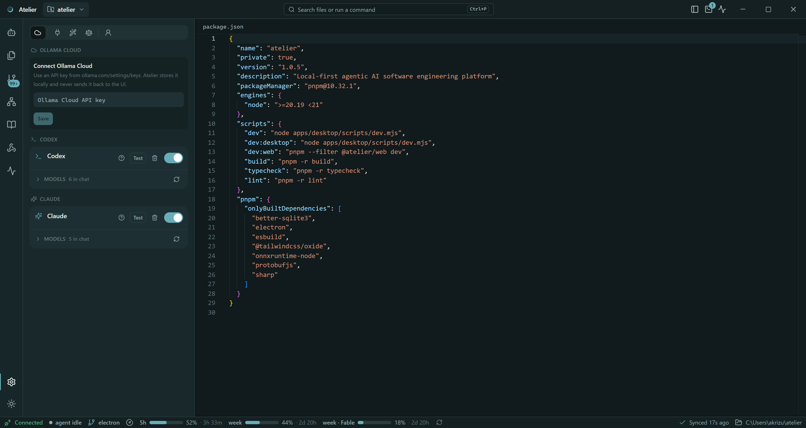
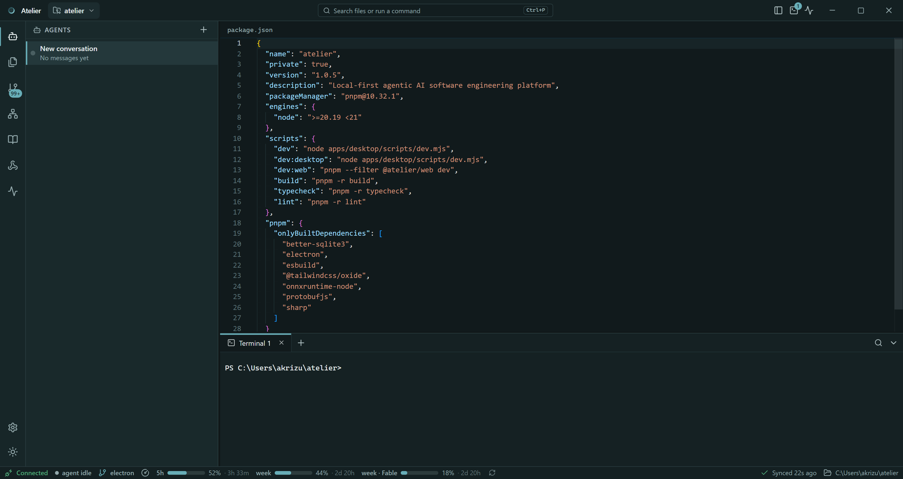
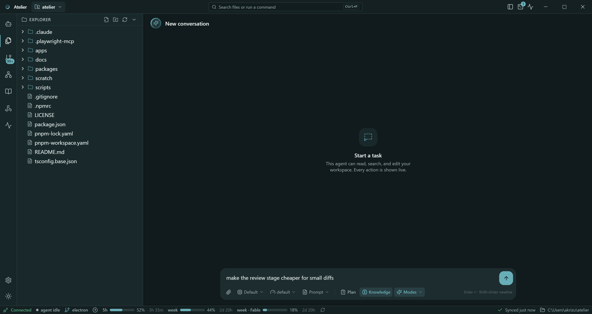
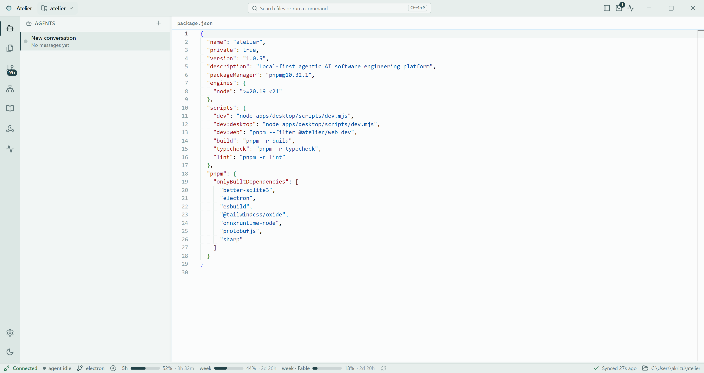

Local-first agentic IDE
Your workshop for
building software with agents.
Atelier opens a folder, parses it with tree-sitter into a local SQLite symbol graph and vector store, and runs agent sessions against that index through a staged pipeline — with hooks that stop the destructive things before they happen. Your code, your index, your terminal and your git history never leave the machine.

Atelier's own repository, indexed locally — tree-sitter for the graph, on-device embeddings for search. No code, no embedding API call.
What is in the box
Everything below runs on your machine. The only thing that leaves it is the request you send to the model provider you chose.
Many agents, many projects
Concurrent agent sessions per project and many projects open at once — each project gets its own agent process, so one keeps working while you look at another.
Bring your own model
Claude through the Agent SDK and your Claude Code sign-in, Codex CLI, and Ollama (local daemon or Ollama Cloud). Per-provider switches plus a model allowlist.
Knowledge engine, entirely local
tree-sitter into SQLite — files, symbols, imports, call edges,
features, chunks — with embeddings computed on-device
(all-MiniLM-L6-v2) into a sqlite-vec store.
Guardrails that actually block
Impact-radius check before a first edit, targeted edits over whole-file rewrites, no self-service commits, and approval modals for DB, dev-server and package commands.
A real workbench
Monaco editor and diff viewer, ConPTY terminals shared with the
agent's own run_terminal, source control with a
commit → push → PR wizard, command palette, RAG inspector.
Context you can audit
Token ledger, per-request budgets, dedup and candidate ranking, prompt caching, task summaries and a live usage monitor — the context assembled for each request is accounted for and visible.
Ten observable stages
Every non-trivial turn runs the same pipeline, streamed to the process rail as it happens. Trivial chat skips the whole thing instead of paying for it.
The console, screen by screen
Captured from a fresh clone opened on Atelier's own source tree.








Run it locally
There is no installer to download yet. Clone it, install, start the dev stack — the whole thing boots from one command.
Prerequisites
Node 20 LTS (21+ is rejected), pnpm 10 via corepack enable,
git, and at least one signed-in model provider — Claude Code, Codex
CLI, or a local Ollama daemon. The native modules ship prebuilt, so
no Visual Studio build tools are needed.
Clone and install
git clone https://github.com/lamji/atelier.git cd atelier corepack enable pnpm install
Start the dev stack
# PowerShell — skip the Supabase sign-in gate while you work on the app $env:ATELIER_DEV_SKIP_AUTH = "1"; pnpm dev # bash / zsh ATELIER_DEV_SKIP_AUTH=1 pnpm dev
First run
Pick a folder and let the first index finish — a large repo takes a minute of CPU. Then open Settings → Providers, switch on a provider and allow the models you want.
Alpha, and honest about it. Windows is the platform Atelier is
developed and packaged on; the code is cross-platform but macOS and
Linux are unverified, and the installer script is NSIS-only. Real
sign-in needs your own Supabase project — or skip it in dev with
ATELIER_DEV_SKIP_AUTH=1. Full instructions live in the
README.
How it fits together
Four packages, one contract. The renderer never touches your disk; the agent owns every privileged operation.
apps/desktop
Electron shell. Owns Google sign-in (Supabase PKCE +
atelier:// deep link), the project registry, and one
forked agent utilityProcess per open project.
apps/agent
The Local Agent runtime: Agent SDK, filesystem, terminal, git, tree-sitter knowledge engine, RAG, hooks, validation. Serves RPCs over an Electron MessagePort — no sockets, no tokens.
apps/web
The renderer (React + Vite), MVVM throughout: dumb views, hooks as view-models, zustand stores. A pure presentation layer.
packages/protocol
The zod-typed wire contract — RPC methods, event taxonomy, native port frames — that every side compiles against.